OPTICSTUDIO 2024 R1 · MCP 实际运行 · 2026-11-06
915 nm 调焦镜组
首轮结果与操作复盘
理想模型通过；真实镜组有明确取舍。现阶段还不能证明实际激光在 1–10 m 全程达到 ≤5 mm。
5.34 mm短焦双胶合 · 调焦行程
24.53 mm长焦双胶合 · 调焦行程
4 mm / M² 待确认决定真实光斑的剩余输入
若继续围绕现有短行程主体研究，优先看06_短焦_双胶合。它比短焦平凸的最差波前降低约 83.5%，但 1 m 处仍有 0.109 波，未达到任务说明的 0.07 波标准。
长焦双胶合五个设计点均小于 0.07 波，但需要约 24.53 mm 行程，且本轮物镜为 Ø50.8 mm，需重新考虑结构。
模型是可行性研究文件，非已定型镜片设计。工作距离已正式改为 1–10 m；915 nm 已确认；4 mm 入射直径暂用；≤5 mm 是用户给定的评估目标，直径定义仍待明确。
1. 哪个方案值得继续
本表的“通过”仅针对五个设计点的镜片波前质量，不能当作实际激光光斑 ≤5 mm 的证明。短焦平凸在 10 m 的几何扩散已经很大，不适合作为本轮首选。
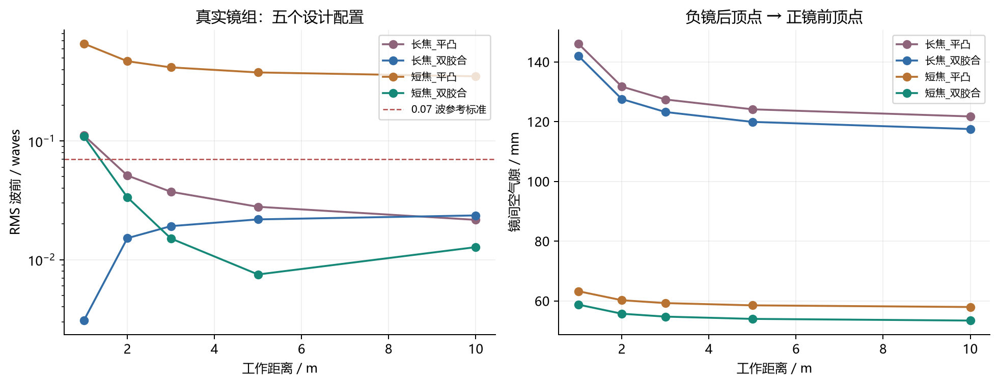
圆点是 1、2、3、5、10 m 的真实 Zemax 结果；连线仅帮助比较，并非控制卡插值表。双胶合方案另做了每隔 0.5 m 的独立调焦检查，共 38 个点。短焦方案的主要波前问题集中在近端，1.5 m 检查点已低于 0.07 波。此离散检查不能替代连续全范围的严格证明或装调容差分析。
机械上要记住的两件事
当前 v0.9 装配的已核验运动范围是 −7.8～+3.8 mm，即 11.6 mm，不是 Claude 文档写的 8 mm。短焦方案的行程能放进这个范围；但镜片的基准位置必须重新安排。真实短焦双胶合镜间空气隙约 53–59 mm，原 CAD 两镜中心占位约 120 mm，不能仅换镜片就直接使用。
表中 d 是负镜最后一面顶点到正镜第一面顶点的空气距离，不是两镜片中心距，也不是主平面距离。工作距离 L 从正镜最后一面顶点量到目标面。CAD 镜座尺寸必须用真实厚度和镜片安装基准换算。
2. 每个配置的数值
下面 RMS 光斑是几何半径，单位 mm；不能直接与“实际光斑直径 ≤5 mm”混用。真实方案的波前与几何 RMS 使用 12 环高斯求积读取。文件保留了全部五个配置。
01_理想长焦：行程 24.186324 mm
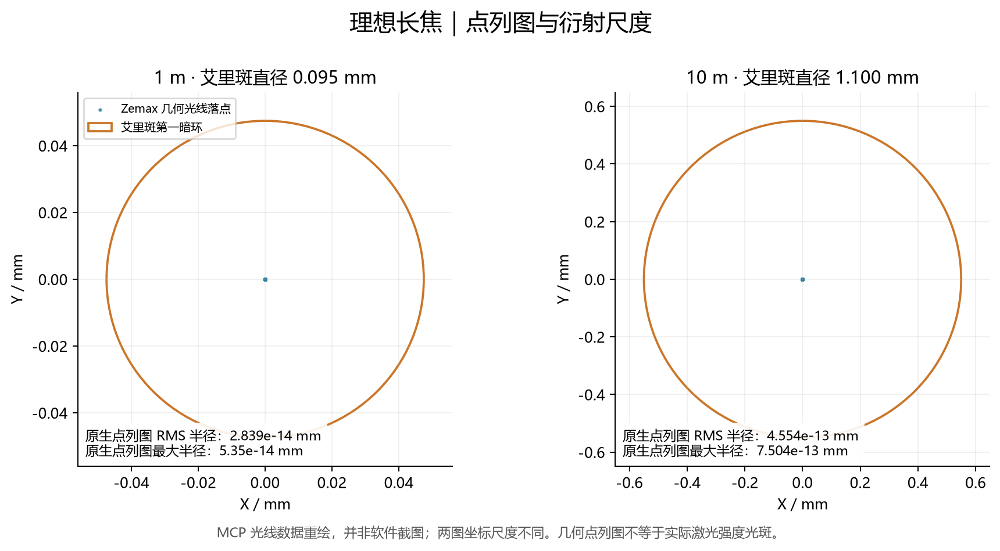
理想模型：几何点几乎重合，艾里斑仍有有限大小。02_理想短焦：行程 5.514330 mm
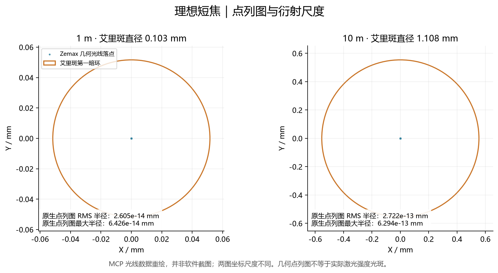
理想模型：几何点几乎重合，艾里斑仍有有限大小。03_长焦_平凸：行程 24.373197 mm
915 nm 实际焦距：负镜 -30.3287 mm；正镜 151.8599 mm；焦距绝对值比 5.0071。
选中朝向：负镜平面朝入射；正镜相对厂家原处方反向放置。具体面形见下方原生光路图。
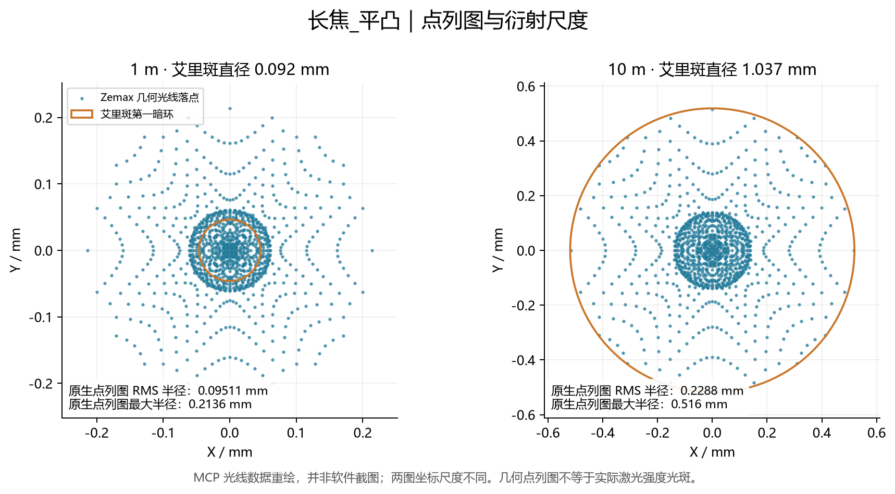
数据图：光线落点来自 Zemax Batch Ray Trace；橙圈按 Zemax 工作 F 数计算艾里斑。文字统计来自原生 Standard Spot Diagram，采样方式与求积 RMS 略有差异。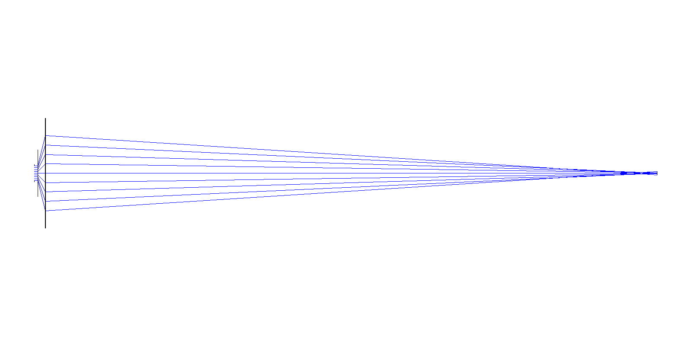
10 m 全光路：纵向尺寸放大 60 倍，以便看到光束；不要用此图量结构比例。04_长焦_双胶合：行程 24.526722 mm
915 nm 实际焦距：负镜 -30.3287 mm；正镜 151.5316 mm；焦距绝对值比 4.9963。
选中朝向：负镜平面朝入射；正镜相对厂家原处方反向放置。具体面形见下方原生光路图。
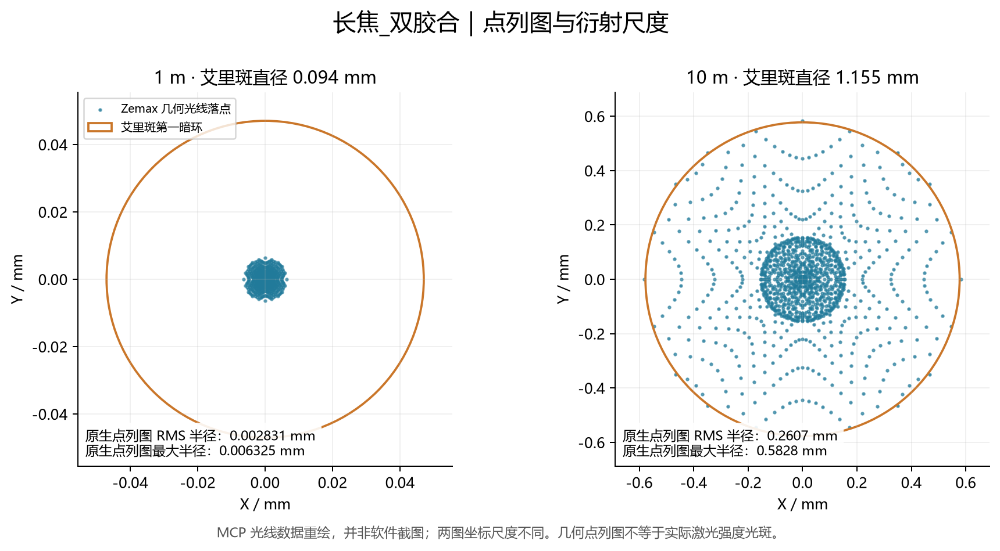
数据图：光线落点来自 Zemax Batch Ray Trace；橙圈按 Zemax 工作 F 数计算艾里斑。文字统计来自原生 Standard Spot Diagram，采样方式与求积 RMS 略有差异。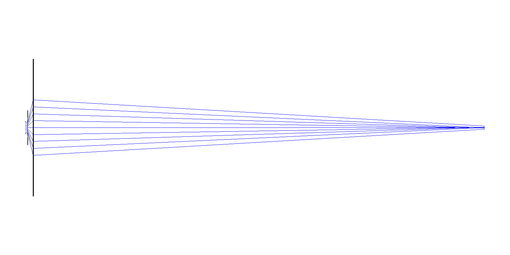
10 m 全光路：纵向尺寸放大 60 倍，以便看到光束；不要用此图量结构比例。05_短焦_平凸：行程 5.289148 mm
915 nm 实际焦距：负镜 -15.3755 mm；正镜 75.9300 mm；焦距绝对值比 4.9384。
选中朝向：负镜平面朝入射；正镜相对厂家原处方反向放置。具体面形见下方原生光路图。
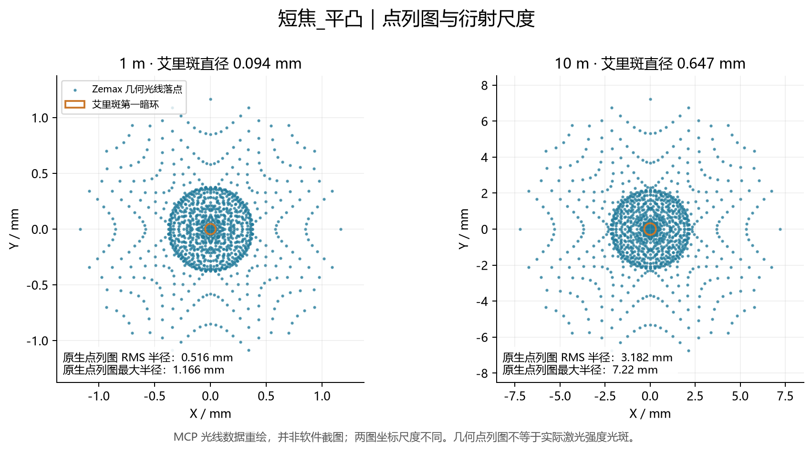
数据图：光线落点来自 Zemax Batch Ray Trace；橙圈按 Zemax 工作 F 数计算艾里斑。文字统计来自原生 Standard Spot Diagram，采样方式与求积 RMS 略有差异。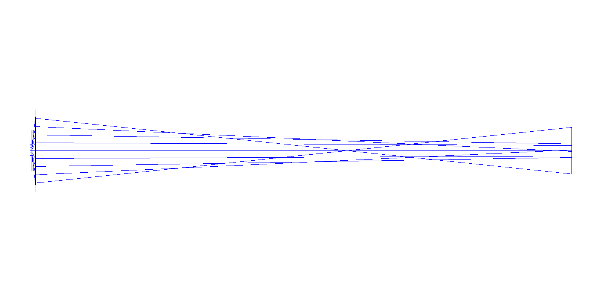
10 m 全光路：纵向尺寸放大 60 倍，以便看到光束；不要用此图量结构比例。06_短焦_双胶合：行程 5.340933 mm
915 nm 实际焦距：负镜 -15.3755 mm；正镜 74.9814 mm；焦距绝对值比 4.8767。
选中朝向：负镜凹面朝入射；正镜相对厂家原处方反向放置。具体面形见下方原生光路图。
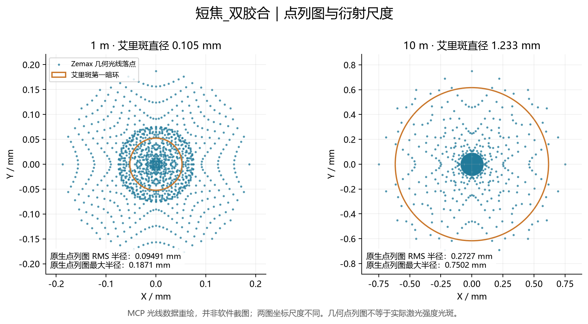
数据图：光线落点来自 Zemax Batch Ray Trace；橙圈按 Zemax 工作 F 数计算艾里斑。文字统计来自原生 Standard Spot Diagram，采样方式与求积 RMS 略有差异。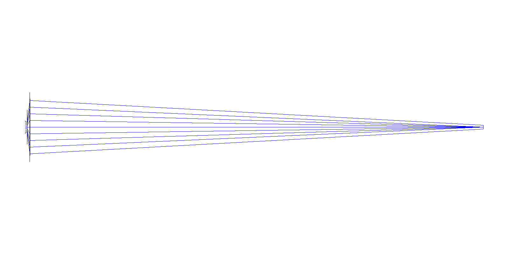
10 m 全光路：纵向尺寸放大 60 倍，以便看到光束；不要用此图量结构比例。3. 为什么还不能判定实际光斑达标
几何点列图检查光线落点，波前检查镜片像差；它们都没有自动给定真实激光器的 M²、束腰位置或强度分布。额外做的高斯模型固定物理输入直径为 4 mm，假定入射参考面处是腰斑，考察 M² 变化；这与前面的均匀圆瞳几何模型是两种条件模型。
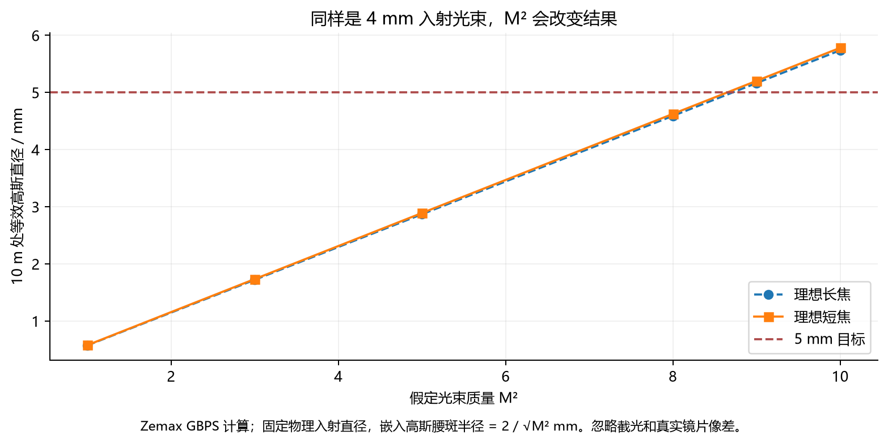
数值由 Zemax GBPS 操作数计算，不是激光器实测值。当前条件下，M² 到约 9 时，理想模型在 10 m 已超过 5 mm。实际设计还要加入镜片像差、孔径截断和装调误差；不能把这张表视为整机合格证，也不能把几个不同定义的直径直接相加。
另外，“5 倍”目前是名义目标。真实短焦候选在 915 nm 的焦距比约 4.8767，并非精确 5.000。若严格要求 5.000，需要重新配焦距。有限距离聚焦时，正镜各面上的光束直径也会变化，不能固定按 20 mm 处理。
后续需要：准直后束径及其定义、M²（必要时 X/Y 分别给出）、束腰位置或发散角；并明确“5 mm”指 1/e²、D4σ、FWHM，还是某个包围能量直径。单色像差通过也没有验证功率承受、镀膜损伤或热效应。
高斯半径与嵌入光束的定义见 Ansys：Paraxial Gaussian Beam。
4. 明早照着做：先看懂，再试改一个数
- 打开一个模型。启动 Zemax，按 Ctrl+O，选本包“模型”中的
06_短焦_双胶合.zos。学习薄透镜时选 01_理想长焦.zos。同名 .zmx 是文本格式备份。
- 看镜头数据表。按 Shift+F1 打开 Lens Data Editor。真实短焦模型中，面 2～3 是负镜；面 4～6 是双胶合正镜；面 7 是目标。Thickness 表示“这一面到下一面”的轴向距离，Material 是该面之后的介质。
- 切换距离。按 F7 打开 Multi-Configuration Editor，双击配置列头。配置 1、2、3、4、5 分别对应 1、2、3、5、10 m。Ctrl+A 切下一个配置。选中一个单元格不等于切换当前配置。
- 看光路。按 Ctrl+L 打开 Cross-Section。切换配置后按 Ctrl+Shift+U 更新所有窗口。镜片较小时，把鼠标放在镜片区域左上方，按住左键约半秒，等指针变成十字后向右下拖框，框住两组镜片，松开即可放大。右键选择 Reset Zoom（重置缩放）可恢复全图。操作见 官方缩放说明。
- 看点列图。按 Ctrl+Shift+S 打开 Standard Spot Diagram。Settings 中选 Configuration=Current、Field=1、Wavelength=1，勾 Show Airy Disk，Reference=Centroid。切换配置并更新。RMS Radius 是半径；橙圈/艾里圈是衍射尺度，不是完整真实激光光斑。
- 看波前。Analyze 中打开 Wavefront / Zernike Standard Coefficients，选单一波长 0.915 μm 和当前配置。在 Text 页查看 RMS 与各项系数。Z11 是初级球差项；本轮的主要残余像差是轴上球差。斯特列尔率 (Est) 是估算，不是实测 PSF。
真实短焦模型里，F7 的三行分别是什么
演示中把短焦正镜最后顶点放在 z=100 mm、长焦放在 z=180 mm，仅用于固定坐标参考；这两个数不是要求你照做的 CAD 尺寸。真实短焦的关系是 THIC 1 + THIC 3 + 3.0 + 1.6 + 5.0 = 100 mm。
我这次是怎样优化的
先在厂家目录选入镜片，保持曲率、玻璃、中心厚度不变；负镜和正镜各试正反两种方向，共四种组合。每个组合建立五个距离配置，只把镜间空气隙作为变量。用 RMS Wavefront / Centroid 的多配置评价函数跑 Zemax DLS，选取最差波前较小且没有截光的朝向；然后逐配置细化空气隙，评价值仍取 Zemax RWCE。最后补回负镜前方空气段并冻结变量，便于你查看。
自己练习时，先“另存为”。F7 里对 THIC 3 的五个数按 Ctrl+Z 设为变量；这在 Zemax 是“设变量”，不是撤销。F6 打开评价函数编辑器，Optimization Wizard 选择 RMS、Wavefront、Centroid、All Configurations，使用 Gaussian Quadrature。Ctrl+Shift+O 运行局部优化。只动空气隙，保持 THIC 6 的目标距离固定。
优化之后按上面的长度关系重新填写 THIC 1。不要把 3 mm 的负镜中心厚度设成变量，也不要用 Quick Focus 移动目标面来替代本题的动镜调焦。此处的准直入射模型下，补回前方空气段不改变入射波前；以后用真实束腰模型时须让两者联动。
试一下高斯光束
打开理想模型并切到配置 5，按 Ctrl+B 打开 Paraxial Gaussian Beam。波长选 1，Surf 1 to Waist=0。M²=1 时 Waist Size 填 2 mm；M²=5 且保持物理入射直径 4 mm 时，嵌入腰斑半径应填 0.894427 mm，不能仍填 2 mm。在 Image 面读 Size，注意这是半径，需要乘 2 得直径。M²=1 时对应 1/e² 高斯宽度；一般 M² 模型只是等效传播，不能推断任意实际光束的强度轮廓。
操作依据：官方快捷键、切换配置、多配置优化。
5. 对 Claude 原方案的审查
- 薄透镜公式与原第 1 步建模逻辑正确，原脚本已在独立 Zemax 实例实测；原文件未修改。
- 原脚本只做长焦理想模型，并不包含真实镜片、短焦方案或真实激光光斑验证。几何 RMS≈0 只证明理想成像成立。
- 本轮补齐了正镜固定的坐标关系、四种真实镜组、四种朝向比较、真实空气隙优化、有效孔径和重开检查。
- 口径按厂家保守保证值 90% 外径设置圆孔，不把机械外径当通光孔径。长焦理想模型 1 m 时的物镜处束径约 23.53 mm，已超过 Ø25.4 mm 镜片的 90% 保证口径 22.86 mm；本轮长焦平凸选 Ø30 mm，双胶合选 Ø50.8 mm。几何光线未截，不代表实际高斯尾部能量全部通过。
- 实际短焦候选并非精确 5 倍；当前占位镜座尺寸也未自动转换为真实镜片安装尺寸。
- 没有量化非球面的收益：本轮没有生成或声称已有非球面定型处方。实际已计算的收益来自双胶合与平凸的比较。
展开球差证据（Zemax Zernike Standard）
原始分析文字在“原始数据”文件夹。系数与 RMS 波前均使用各自分析的采样方式，微小差异正常；不要把单个系数直接当总 RMS。
镜片来源：本机 OpticStudio 的 THORLABS 厂家目录，原始处方留在审查目录；型号与玻璃处方另对照 Thorlabs 平凹镜、平凸镜及口径规格、650–1050 nm 双胶合镜。未核实即时库存或按功率完成选型。
原脚本的 S.New(False) 会重置所连接的当前系统。本次在独立实例运行；以后若用 Interactive Extension 直接复跑原脚本，应先保存界面中已有的设计。
交付核验
6 个主模型 × 2 种格式 × 5 个配置，60 次文件参数回读通过；12 组端点点列图，每组 1257 条光线，共 15084 条光线无错误、无截光；另有 60 个高斯条件案例与 38 个双胶合范围检查点。点列图的配置号与原生文字输出已逐一核对。模型参数保留较多小数是为了复算，不代表加工精度。
原始数值、厂家处方、运行脚本与 MCP 记录保存在包内。图中原生光路与数据重绘已区分。既有 SolidWorks 文件没有在本轮修改。